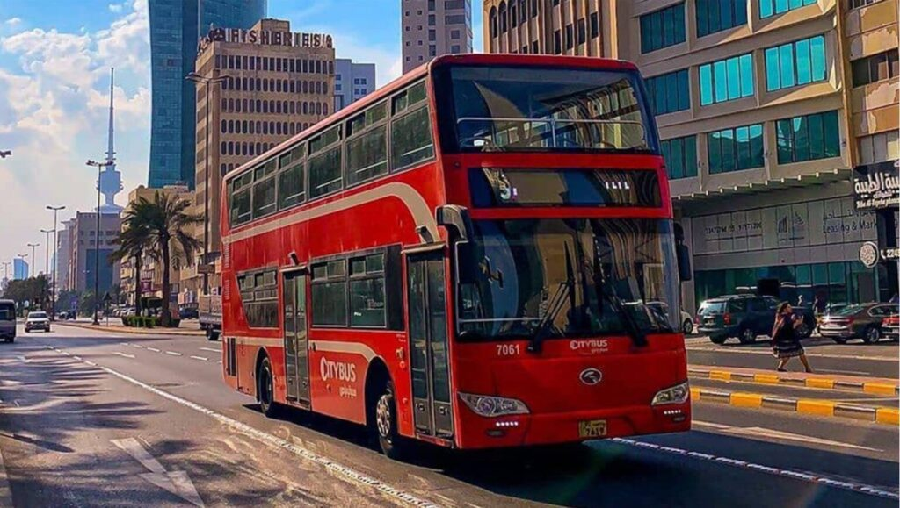

Travel Tips for Kuwait
Before travelling to Kuwait, make sure that your passport is valid and check if you need a visa. The best time to visit Kuwait is between November and March in Winter where the weather is cooler. Always carry some cash because not all the places accept card.
Information about Kuwait
- Location: Middle east in the Arabian Gulf
- Capital city: Kuwait city
- Official language: Arabic
- Currency: Kuwaiti Dinar (KWD)
- Population: Around 4.5 million people
Public Transport in Kuwait
Public transportation in Kuwait is available, but most people prefer using cars or taxis because it is faster and more comfortable. There are public buses that cover many areas in the city, and they are inexpensive, but they can get crowded during busy hours. Taxis and ride-hailing apps like Careem are very common and easy to use, making them a popular choice for visitors. Walking is possible in some areas, especially during winter, but the hot summer weather makes it difficult. Overall, transportation in Kuwait is simple, safe, and convenient for tourists.

What to Expect in Kuwait
- Kuwaitis are friendly and polite with visitors.
- The country is clean and organized.
- English is widely spoken in malls and restaurants.